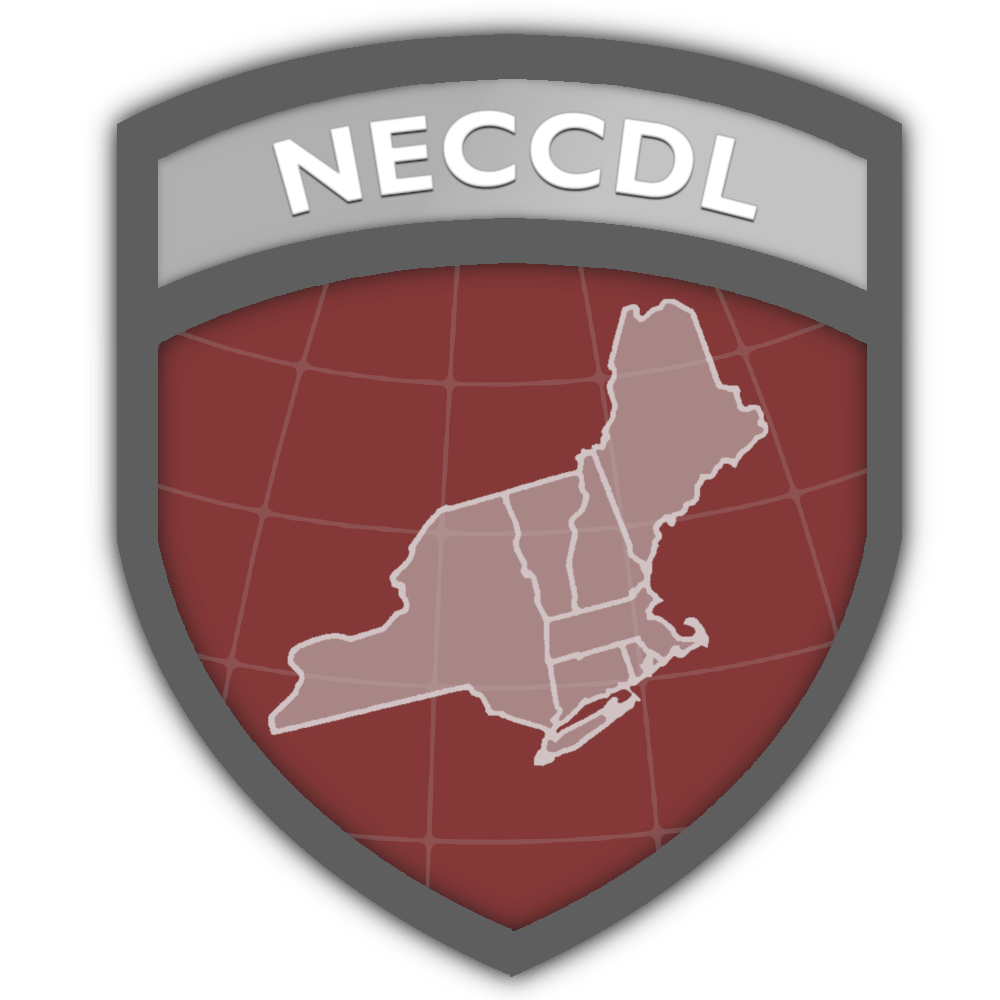

Latest



NECCDC 2026
My experience competing in the New England Collegiate Cyber Defense Competition.
PS2 Softmodding
A starter guide for softmodding a PlayStation 2 and loading games from modern storage.
Gaming on Linux
What to expect when moving your game library to Linux, plus tools that make it easier.
Gaming on Linux
What to expect when moving your game library to Linux, plus tools that make it easier.
Gaming on Linux
What to expect when moving your game library to Linux, plus tools that make it easier.